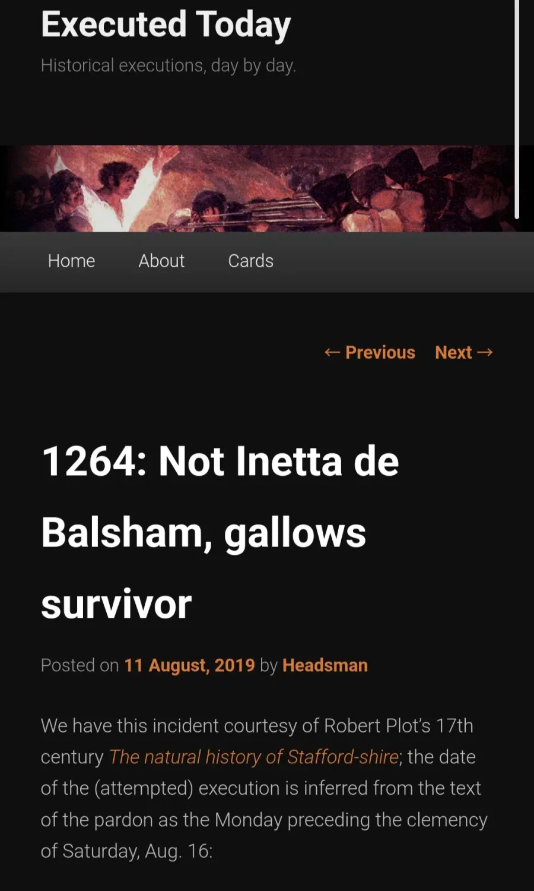
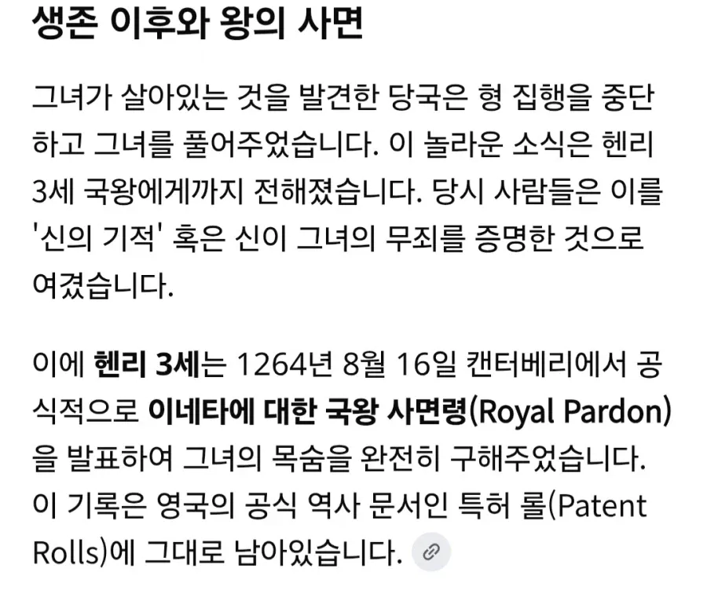
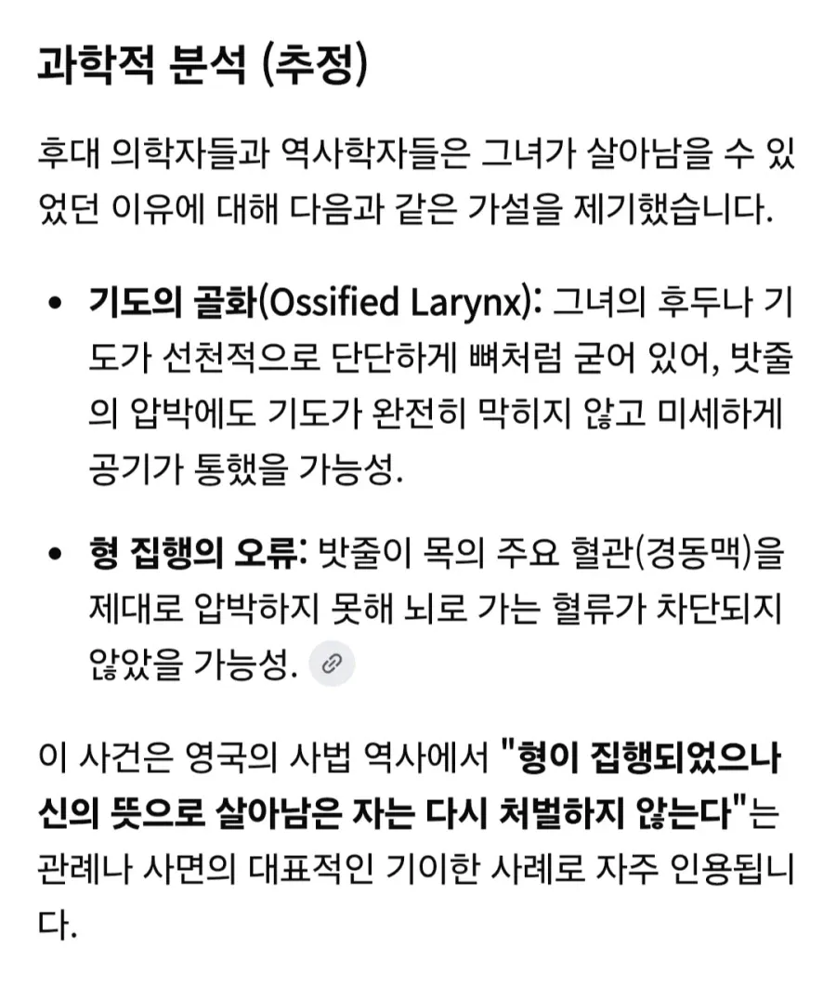
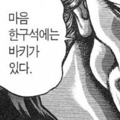

https://www.executedtoday.com/2019/08/11/1264-not-inetta-de-balsham-gallows-survivor/
하루 동안 교수대에 목 매달아뒀는데 다음날까지 살아있어서 풀어주고 영국 국왕이 사면령 내림



https://www.executedtoday.com/2019/08/11/1264-not-inetta-de-balsham-gallows-survivor/
하루 동안 교수대에 목 매달아뒀는데 다음날까지 살아있어서 풀어주고 영국 국왕이 사면령 내림
하루를 버텼다고? ;;; 엄..
아씨... 마년가?
커다란 저울과 오리를 가져와라!!!
?? : 들켰군
교수형을 사면하고 마녀로 의심되니 화형
유목민들 사이에 저런 풍습이 있지 않았나? 죽일죄를 진 놈이 세놈과 막고라 떠서 살아남으면 면죄부가 되는거 ㅋㅋㅋㅋㅋㅋ
게르만족의 결투재판도 있음
이걸 사네 ㅋㅋ
??: 이 나라는 사형도 제대로 못하는 나라
신권이 살아있던 시기라서 다행이네
몽골인 이었으면 말에 메달고 달렸을텐데
??? : 패배를 알고싶다...!
현대에서도 사형 집행했는데 살아있다면 면책해주는 판결 있을껄? 같은 범죄행위에 사형집행을 두번할수없다고
아 죽이보다 집행하는데 의미를 두는건가
서울구치소 이전후 첫 사형집행에서 찐빠났는데
걍 수리하고 다시 집했했다고함
한국은 보법이 다르긴하네
러시아에도 비슷한 사례 있을껄? 사면 됐는데 황제에게 깝죽 거렸다가 다시 사형 집행 된 사건
교수형은 뭐 숨 막혀서 죽는게 아니라며
이런 구라쟁이들
경추 골절로 알고있었는데
뼈는 두껍고 체중은 엄청 가벼웠던가봄
헨리3세가 13세기 그때 왕인데 그당시 교수형은 현대 드롭방식이 아니라 걍 질식사 시키는거 였음
